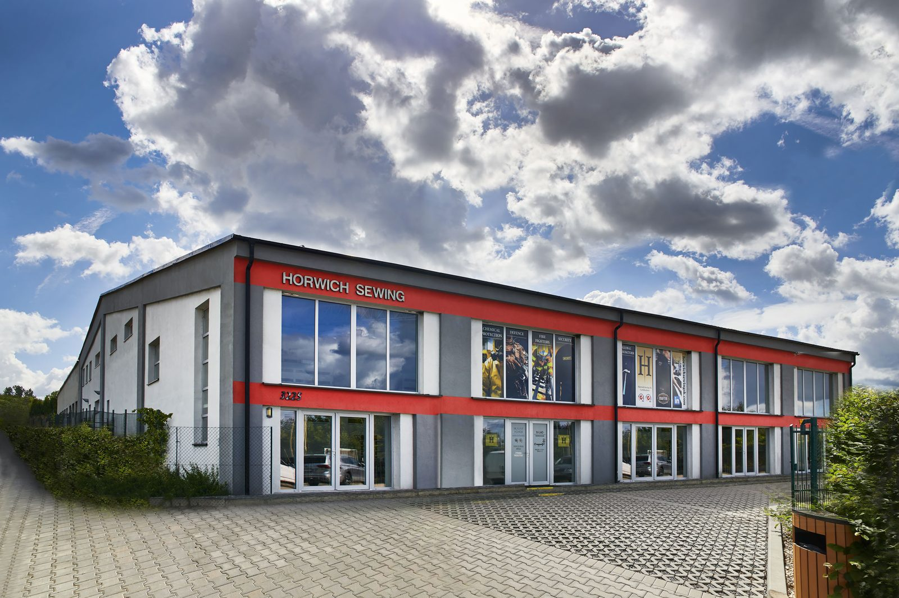

Three generations of textile know-how, a business saved and rebuilt by its own managers, and a simple promise: first-class service, every time.
Horwich Sewing began in 1988 as a specialist producing short-life protective garments — manufacturing the complete PPE range for Kimberley-Clark, the global hygiene and personal-care leader. We built every part of our operation around delivering them a first-class service.
When cost pressures meant production had to move, we relocated to Slovakia rather than the Far East — keeping European quality, oversight and quick response within reach of our customers. We later invested in computerised cutting, flexible working systems and machinery for woven workwear, broadening well beyond a single contract.
By 2019 the business had been through difficult years. That August, two of the company’s own managers — Albert and Lenka — bought it, determined to rebuild it the right way.

Established to cut, sew and pack short-life protective garments, producing Kimberley-Clark’s complete PPE range.
Relocated production to Slovakia to stay competitive, keeping quality and quick response close to customers rather than offshoring to Asia.
Investment in a new factory, computerised cutting, flexible systems and woven-workwear machinery — and new contract customers.
Albert and Lenka acquired the business, bringing a clear ethos: a great place to work, first-class service, and growth through flexible production.
Through Brexit, Covid and high inflation we’ve kept loyal customers by being personal, reliable and competitive — and we’re now growing on that foundation.
When you work with Horwich Sewing SK, you’re dealing with an owner-led business — not a faceless production line. Albert and Lenka took the company on in 2019 and lead it day to day, which is why service is personal and decisions are quick.
Honesty, integrity and reliable delivery, every time — the values the Horwich name has carried since 1988.
Inside the single market with excellent transport links — fast, duty-free delivery across Europe and worldwide.
Modular production and an outsourcer network scale to any order, fast.
Work from your tech packs, or develop the design and patterns with our team.
ISO 9001 inspection with SAP traceability throughout; audited to your requirements.
ISO 14001 certified, with a real commitment to ESG and the circular economy.
A dedicated account manager and a first-class facility that’s a safe place to visit.
Whether you have a finished spec or just an idea, we’ll help you get it made — to a European standard.